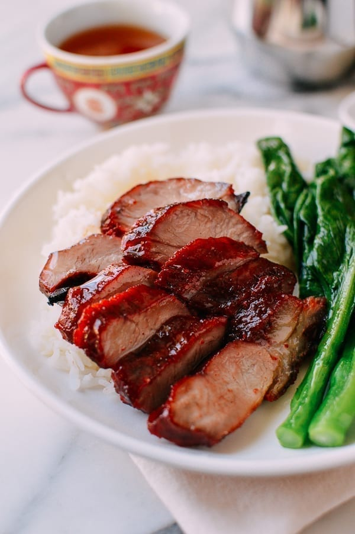

Char Siew

Description
Roast pork with a tangy sweet flabour.
Ingredients
- 900g pork belly
- Marinade
- 0.5t dark soy sauce
- 0.5t light soy sauce
- 0.5t orange food colouring
- a pinch of yellow food colouring
- 4T water
- 1T hot water
- 7T sugar
- 0.5t salt
Steps
Preparation
- Slide the pork into strips about 3 cm thick.
- Mix the ingredients for the marinade together. Add the pork then knead together. Set aside for about 2 hours in the refrigerator.
Method
- Preheat the oven to 200 degrees celsius (ensure that the top grill is on).
- Place the pork on an oven rack or tray and reserve the marinade for basting. Grill the meat for about 10 min on each side basting with the marinade every 5 mins.
- Increase the heat to 240 degrees celsius then grill for another few min until the surface is slightly charred. Slice then serve.